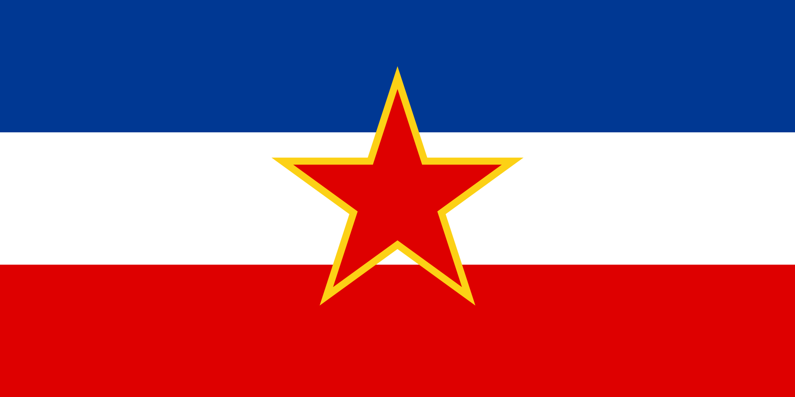
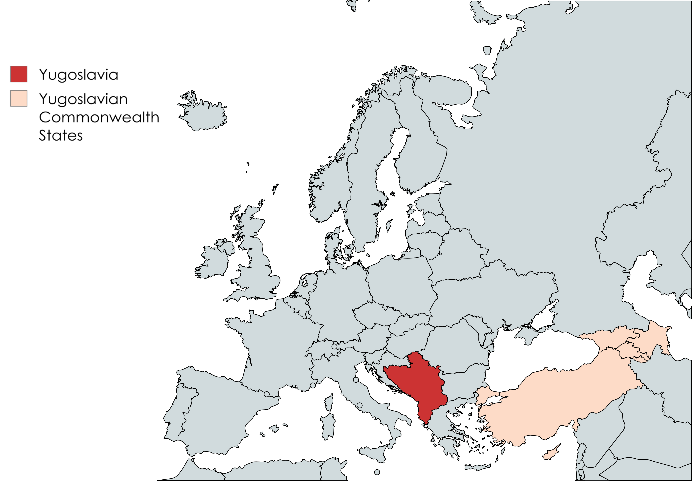
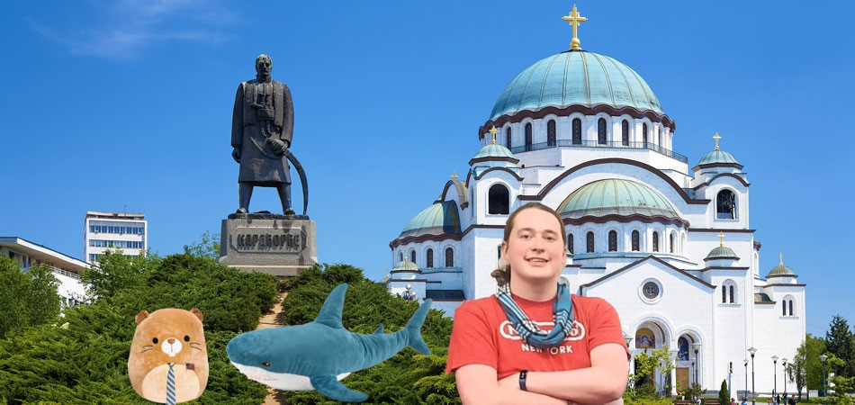
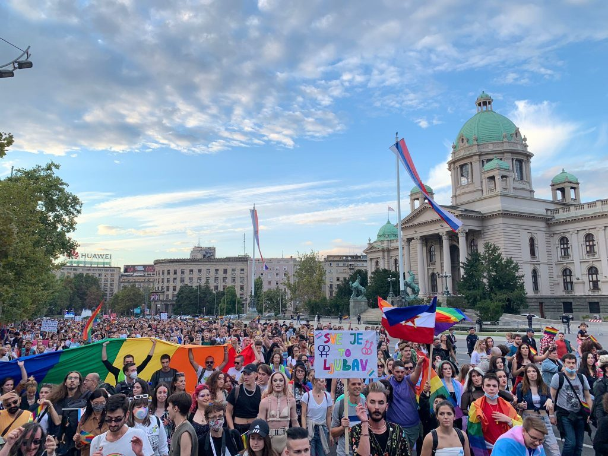

| Yugoslavia | |
|---|---|
|
 
Map of Yugoslavia (red) and its territories (pink) in Europe.
|
|
| Capital | Belgrade |
| Official language | Serbian |
| History |
|
| Founded | 2021 |
| Population | 17,300,000 (mainland) |
| Founded | 2021 |
| President | Neil Divins |
Yugoslavia is a Balkan nation founded by dictator Neil Divins in 2021. The country comprises of most of the former Yugoslavia (excluding Croatia and Slovenia), and the former country of Albania. The country also has territories in West Asia which, though legally treated the same as any other pat of Yugoslavia, are considered plitically distinct.
On August 12, 2021, Neil Divins secretly invaded the former Yugoslavian states in an event known as "Neil's Secret Invasion of Yugoslavia". Neil united victims of the many conflicts and genocides following the initial dissolution of Yugoslavia, bringing the people together to topple the governments responsible. This was done through covert ops, social media propaganda campaigns, and discete assassinations.
Within 9 days, all governments except that of Croatia and Slovenia fell to Neil. In the immediate aftermath, Neil seized all territory of Albania. Shortly after, in late 2021, Neil seized the countries of Turkiye, Cyprus, Armenia, Azerbaijan, and Georgia, forming the overall Yugoslavian empire.
Yugoslavia covers a wide area, and has many climate types within its borders. The European portion is generally considered to have a humid subtropical climate, with the regions is the Caucus and Asia having widely varied climates. Biodiversity is high in all parts of Yugoslavia, with many flora and fauna within its borders.
Yugoslavia is an authoritarian regime run by Neil Divins. No other entities have any real power, though Neil appoints local politicians to administer the various regions. Yugoslavia is the first country to recieve a 0 on the democracy index, and widely considered to be the most oppressive regime on the planet.

Yugoslavia has very few diplomatic relations following the Croatian War and its after effects. Some politicians, such as Chip, maintain relations with the country to maintain an aid pipeline to its citizens. Yugoslavia is otherwise hostile to all diplomats who are unwilling to hand over resources to Neil.
Yugoslavia maintains a powerful military to crush any rebellions. Despite this, their military is generally unfamiliar with combat abroad. Yugoslavia has an estimated 1,000,000 active soldiers and secret police members.
Yugoslavia is a closed economy and has virtually no trade with the rest of the world. Their only export is Kirby memes, which make an estimated $1.3 trillion annually. Otherwise, the country is wholly blocked off from trading with other nations.
Yugoslavia is home to many ethnic groups and minorites. The Serbs are the largest ethnic group overall, with ethnic groups of other member states being largely dispersed throughout the country as well. Hungarians are the largest non-Yugoslavian minority in the mainland, with Kurds and Russians being the largest minority groups in the wider empire.
Though human rights in Yugoslavia are questionable, the country has a large LGBT population. Approximately 9% of the country identifies as queer in some way, with about half of that number identifying as bisexual. Yugoslavia is often praised for its position on LGBT rights, though some recognize it as a smokescreen from the wider rights violations performed by Neil Divins' regime.

Due to the sheer breadth of the empire, many languages are spoken within its borders. Each language is considered protected under Neil's ethnic equality laws, though Serbian is the de-facto official language and each province recognizes different languages at the local level. Common languages include Serbian, Macedonian, Georgian, and Turkish. The country uses 4 different scripts within its borders.
{kind=link}
{kind=link}